Observabilité des Microservices
Ce projet est une application de gestion bancaire basée sur une architecture microservices robuste utilisant Spring Boot, Spring Cloud et Angular.
Architecture du Système
L'écosystème est composé des modules suivants :
- Discovery Service (Eureka) : Service de découverte permettant l'enregistrement et la localisation des microservices.
- Config Server : Gestion centralisée de la configuration via un dépôt Git.
- Gateway Service : Point d'entrée unique de l'application (Routing dynamique).
- Customer Service : Gestion des clients (Données métier).
- Account Service : Gestion des comptes bancaires et transactions.
- Angular Front-End : Interface utilisateur moderne pour interagir avec le système.
Patterns Microservices Utilisés
Service Discovery (Netflix Eureka)
Chaque instance de microservice s'enregistre auprès du serveur Eureka au démarrage. Cela permet :
- Le Load Balancing côté client.
- L'abstraction des adresses IP et des ports.
- La haute disponibilité.
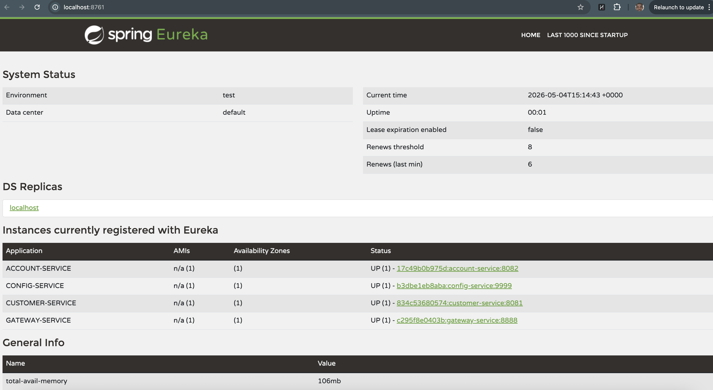
Configuration Centralisée (Spring Cloud Config)
Toutes les configurations (fichiers .properties ou .yml) sont stockées dans un dépôt Git externe ou local.
- Avantage : Modification des paramètres sans recompiler ou redémarrer les services (via
/actuator/refresh). - Sécurité : Séparation stricte entre le code et la configuration.
API Gateway (Spring Cloud Gateway)
Toutes les requêtes externes passent par ce composant.
- Routage Dynamique : Utilise le Discovery Client pour router les requêtes vers les services disponibles (ex:
/CUSTOMER-SERVICE/**). - Sécurité Centralisée : Point idéal pour implémenter l'authentification (JWT) et le Rate Limiting.
Tech Stack
- Backend : Java 17, Spring Boot 3, Spring Cloud (Gateway, Config, Eureka).
- Frontend : Angular, Bootstrap.
- DevOps : Docker, Docker Compose.
- Database : H2 (In-Memory) pour le développement.
Démarrage Rapide
Lancement avec Docker (Recommandé)
# Compiler les JARs
mvn clean package -DskipTests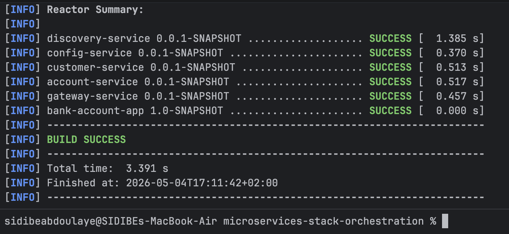
# Lancer la stack
docker-compose up -d --build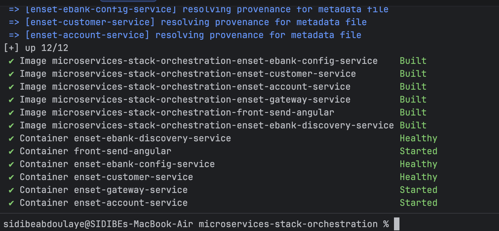
Guide des APIs
Toutes les APIs sont accessibles via la Gateway (port 8888).
1. Customer Service
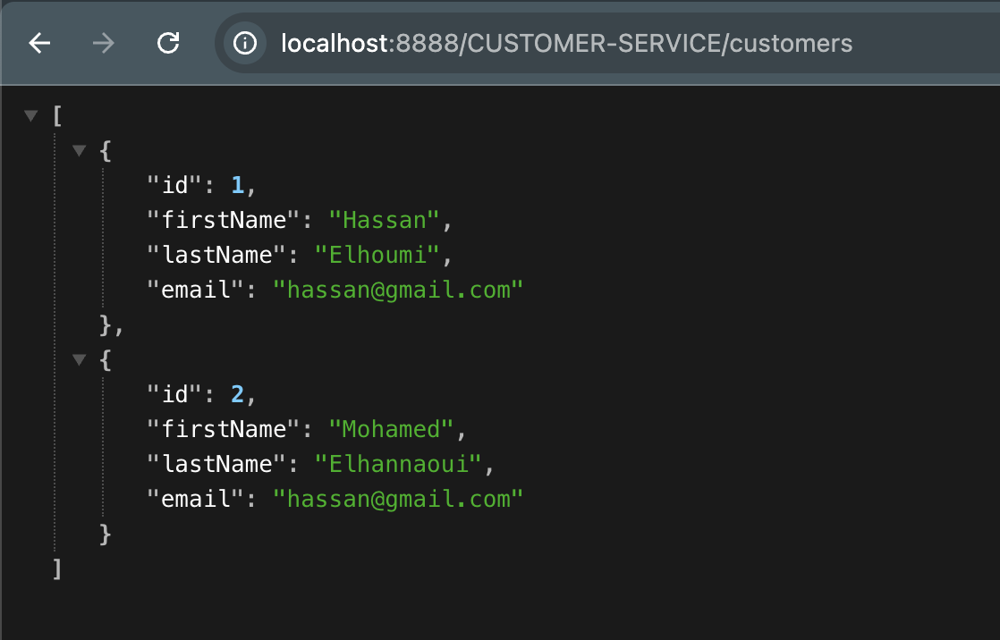
2. Account Service
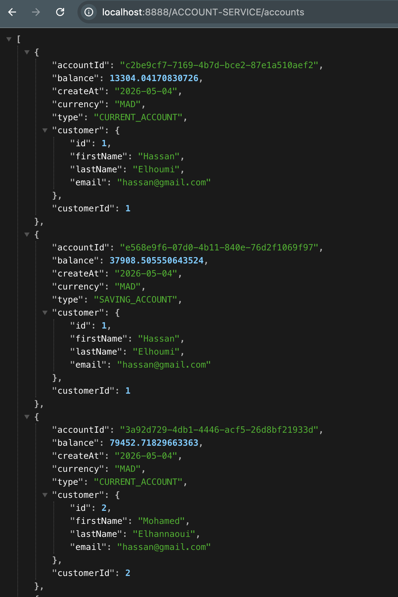
Guide de Test & Validation
Vérification de l'Infrastructure
Health Checks
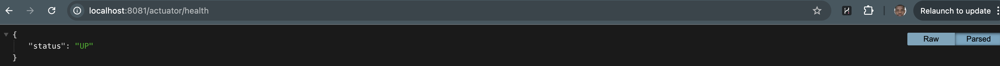
Interface UI
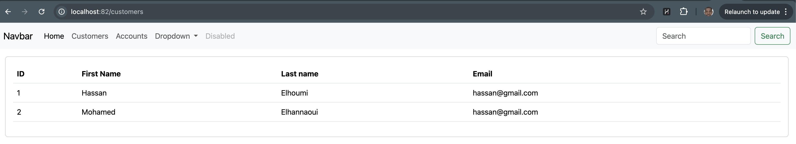
Observabilité & Monitoring
Le système intègre une stack complète pour le suivi des performances et de la santé des microservices.
1. Collecte des métriques (Prometheus)
Metrics Customer Service :
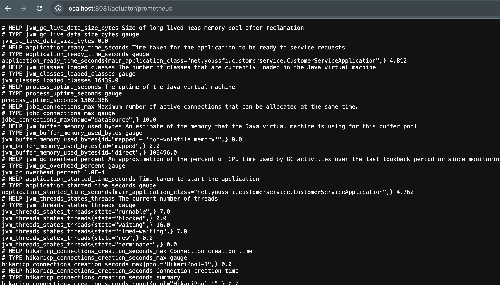
Metrics Account Service :
Metrics Gateway Service :
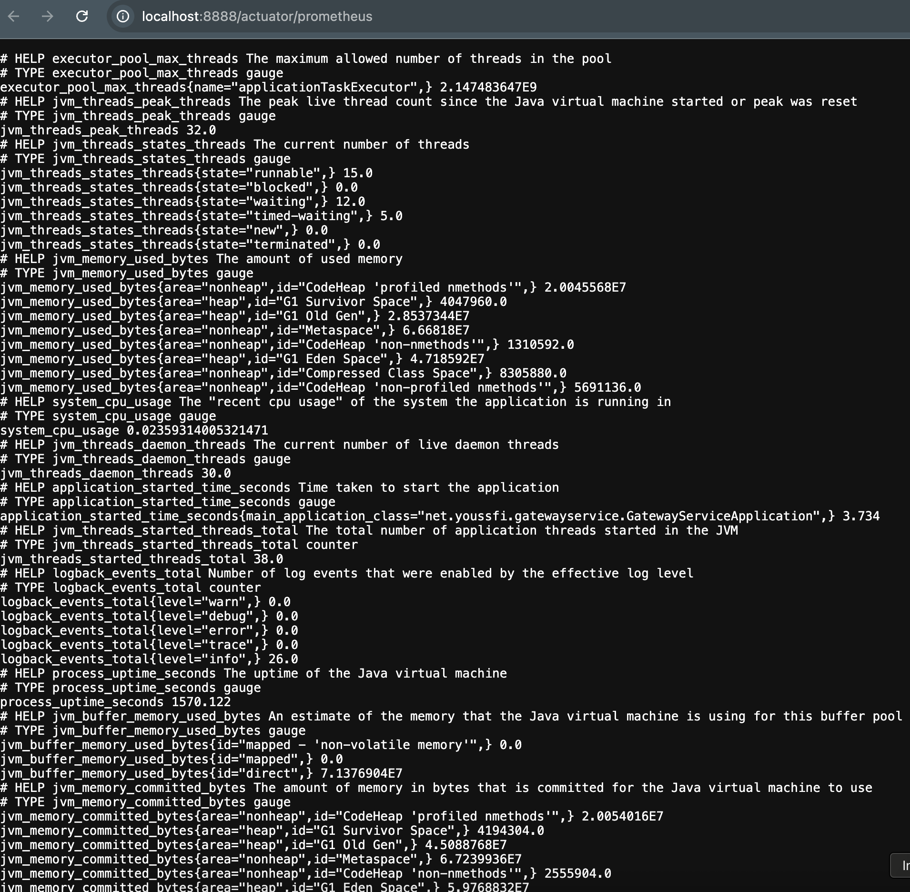
Vérification des cibles (Targets)
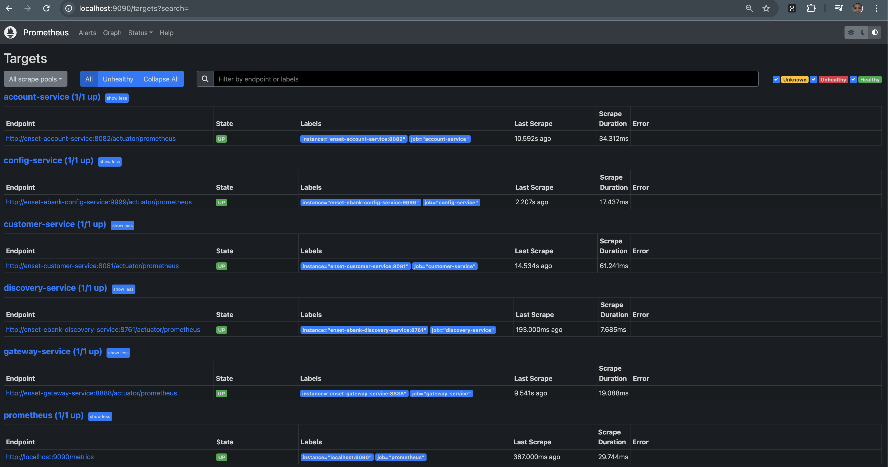
2. Analyse et Requêtage
- Taux d'erreur (404/5xx) :
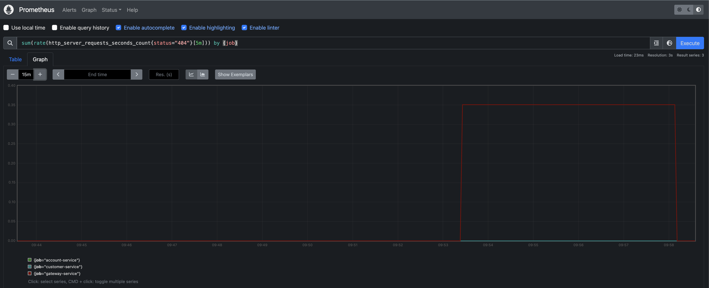
- Requêtes HTTP (Customer) :
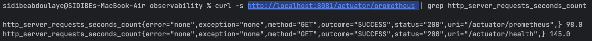
- Utilisation Mémoire JVM :

- Routes Gateway :
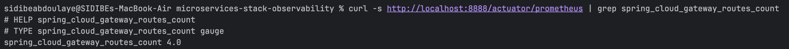
3. Visualisation (Grafana)
Latence p99 et Histogrammes
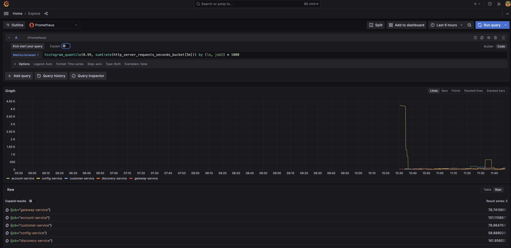
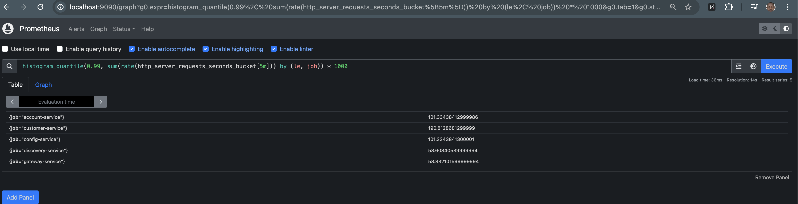
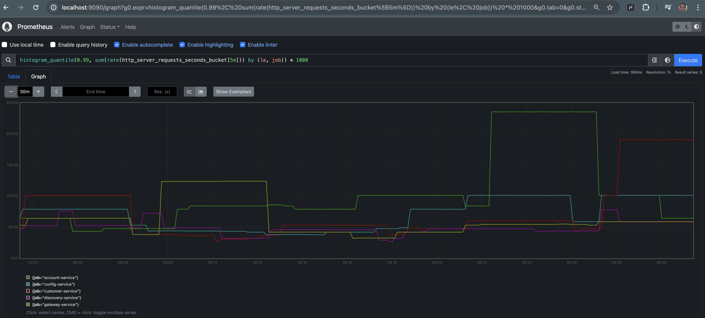
Détails des Buckets HTTP
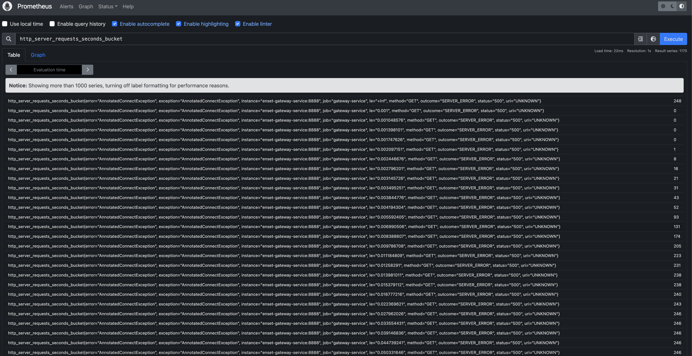
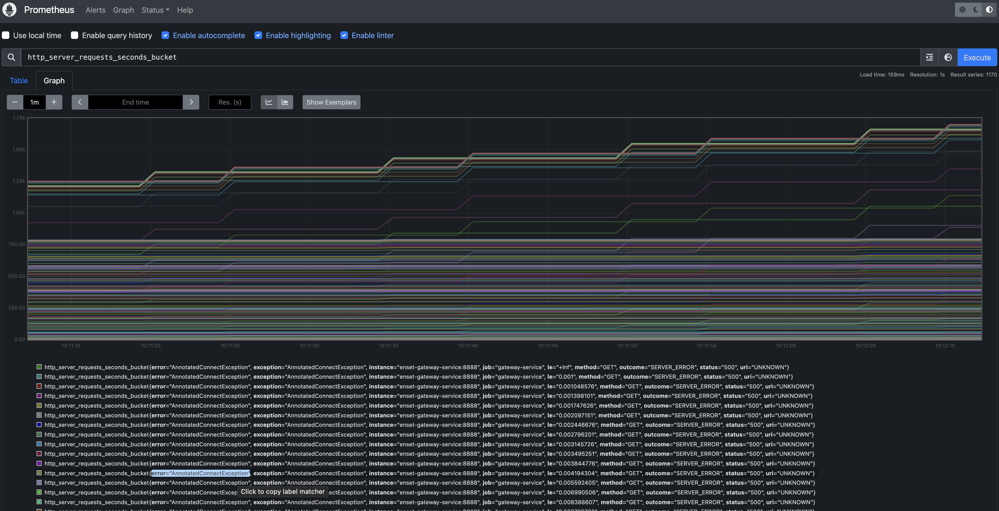